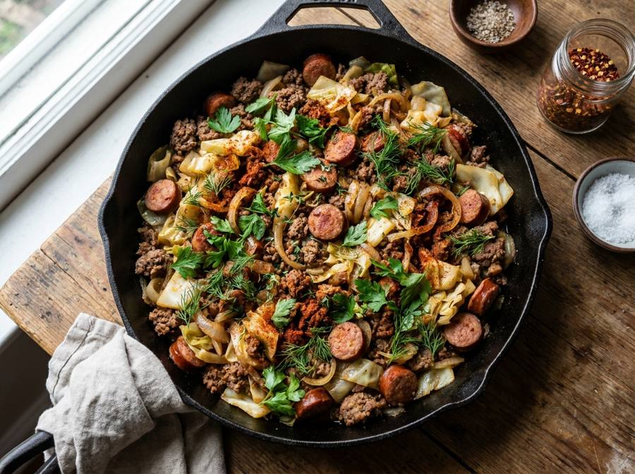

← Alle recepten

🍽 4 porties
⏱ Voorbereiding: 15 min
🔥 Bereiding: 30 min
Σ Totaal: 45 min
Ingrediënten
500 g rundergehakt
250 g pittige worst (bijv. chorizo of andouille), uit het vel
1 grote ui, fijngesneden
1 groene paprika, in blokjes
2 stengels bleekselderij, fijngesneden
4 teentjes knoflook, fijngehakt
1 spitskool (ca. 800 g), in reepjes gesneden
400 ml kippenbouillon
2 el cajun kruidenmix
1 tl gerookt paprikapoeder
1 tl gedroogde tijm
2 laurierblaadjes
2 el Worcestersaus
1 el olijfolie
Zout en versgemalen zwarte peper naar smaak
Bosje bieslook of lente-ui, fijngesneden, om te garneren
Tabascosaus, om te serveren
Bereiding
Verhit de olijfolie in een grote, brede pan of braadpan op middelhoog vuur. Voeg het gehakt en de worst toe en bak ze rul in ca. 8 minuten, tot goed bruin en licht gekarameliseerd. Breek grote stukken fijn met een spatel. Voeg de ui, paprika en bleekselderij toe en bak 5 minuten mee tot ze zacht beginnen te worden. Voeg de knoflook, cajun kruidenmix, paprikapoeder en tijm toe en bak 1 minuut mee tot geurig. Voeg de gesneden kool toe in porties, roer telkens door tot er ruimte vrijkomt in de pan. Giet de kippenbouillon en Worcestersaus erbij, voeg de laurierblaadjes toe en breng aan de kook. Zet het vuur laag, doe een deksel op de pan en laat 15-20 minuten sudderen tot de kool zacht is en de vloeistof grotendeels is ingekookt. Verwijder de laurierblaadjes en breng op smaak met zout en peper. Garneer met bieslook of lente-ui en serveer met tabascosaus erbij.
Bron: geïnspireerd op traditionele Louisiaanse dirty rice
Importeer in Pestle: deel deze URL naar de app.